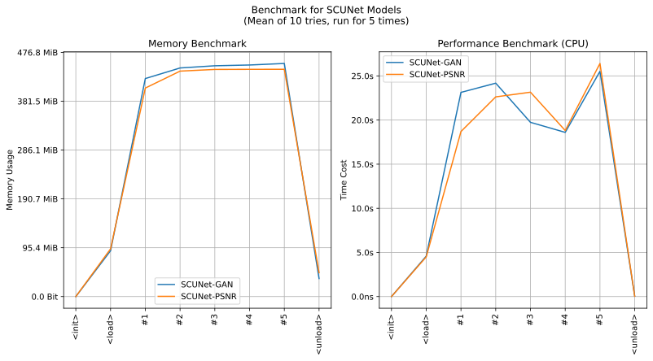

imgutils.restore.scunet
- Overview:
Restore the images using SCUNet.

This is an overall benchmark of all the SCUNet models:

restore_with_scunet
- imgutils.restore.scunet.restore_with_scunet(image: str | PathLike | bytes | bytearray | BinaryIO | Image, model: Literal['GAN', 'PSNR'] = 'GAN', tile_size: int = 128, tile_overlap: int = 16, silent: bool = False) Image[source]
Restore an image using the SCUNet model.
- Parameters:
image (ImageTyping) – The input image.
model (SCUNetModelTyping) – The SCUNet model type (‘GAN’, ‘PSNR’). Default is ‘GAN’.
tile_size (int) – The size of processing tiles. Default is 128.
tile_overlap (int) – The overlap between tiles. Default is 16.
silent (bool) – If True, the progress will not be displayed. Default is False.
- Returns:
The restored image.
- Return type:
Image.Image